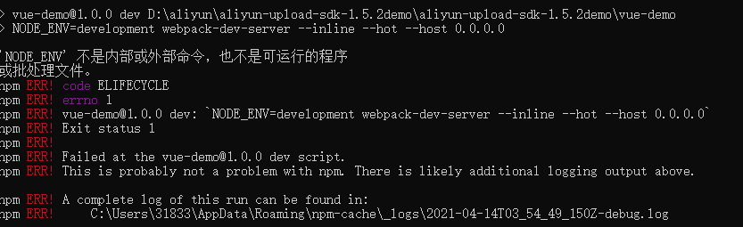
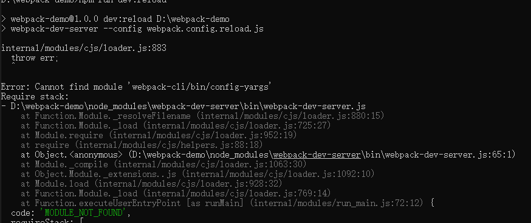
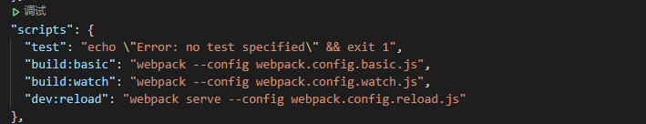

踩坑记录
'NODE_ENV'不是内部或外部命令，也不是可运行程序或批处理文件，如下图:

出现原因：当您使用NODE_ENV =production, 来设置环境变量时，大多数Windows命令提示将会阻塞(报错)。 （异常是Windows上的Bash，它使用本机Bash。）同样，Windows和POSIX命令如何使用环境变量也有区别。 使用POSIX，您可以使用：$ ENV_VAR和使用％ENV_VAR％的Windows。说人话：windows不支持NODE_ENV=development的设置方式。
解决：cross-env使得您可以使用单个命令，而不必担心为平台正确设置或使用环境变量。 只要在POSIX系统上运行就可以设置好，而cross-env将会正确地设置它。 说人话: 这个迷你的包(cross-env)能够提供一个设置环境变量的scripts，让你能够以unix方式设置环境变量，然后在windows上也能兼容运行。
安装：
npm install --save-dev cross-env使用:
{ "scripts": { "build": "cross-env NODE_ENV=production webpack --config build/webpack.config.js" } }NODE_ENV环境变量将由cross-env设置
打印process.env.NODE_ENV === 'production'
Error: Cannot find module 'webpack-cli/bin/config-yargs',如下图

出现原因： ，webpack的版本与webpack-dev-server的版本不兼容。
解决： 使用 webpack serve 来启动 webpack-dev-server
